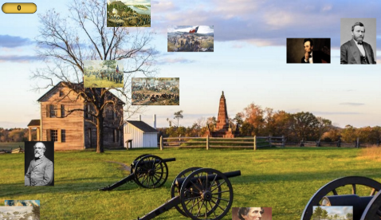

One of our first projects in CSE were made using Scratch. We decided to call our game "Hoops". The game was a basketball themed game where the objective was to control a ball on basketball-court "maze" and reach to the hoop all while avoiding obstacles. Once you reach the hoop your progress to next level and difficulty increase as you go on. In our game we used the basketball sprite and backround that was given by Scratch, but the enemies and maze obstacles were our own sprites we made. Two different enemies are present, the fast guard and fat guard. We brainstormed our ideas with our project log and came up with this game on Scratch.

Educational Game AP CSA
Project Name: Splite as a Nation
Objective: Make an educational game using greenfoot
Course: AP Computer Science Applications
The plan was to make an educational game on the topic of US History, specifically the Civil War, that was both fun and informative. We used another game as our demo for the game and made our own changes to make it unique and as original as possible. The gameplay required two players with one controlling a picture of Ullyses S. Grant and Robert E. Lee of the North and South army, respectively. The game was similar to tag where one person moves across the map looking for sprites that represent different events of the Civil War while another players tries to stop him. A scoreboard keeps track of the sprites collected by one of the players. After the game is over, a slideshow is played to show the educational context of the war.